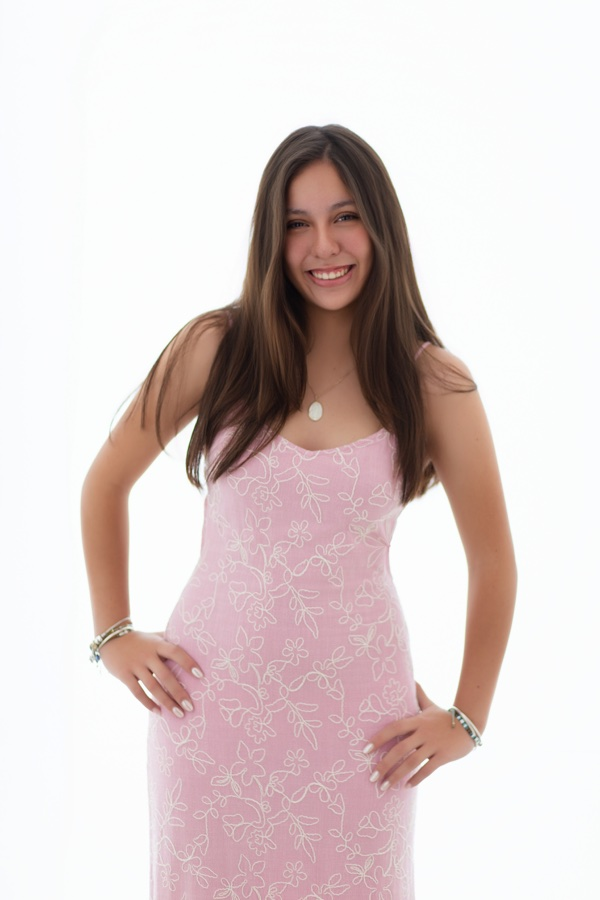
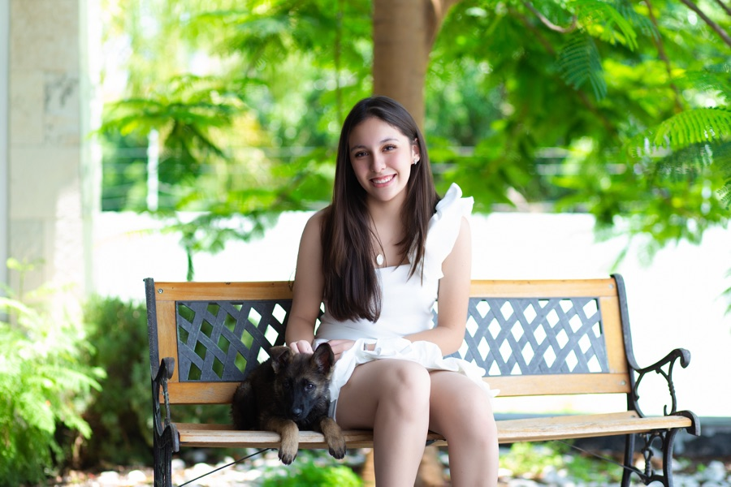

Edición especial · 2026
Mis XV años
Ana Isabela
Sábado 3 de octubre de 2026
01 / Carta
Presentación
Celebramos a Isabela,
cuya alegría, inteligencia
y esencia vibrante
hacen especial cada momento.
Ana Isa · XV
02 / La fecha
Sábado · 03 · 10 · 2026
La espera
00Días
00Horas
00Minutos
00Segundos
Hoy celebramos los XV años de Ana Isa.
03 / Nuestra familia
Con la bendición de
Los nombres
que nos acompañan
Alma Nelly Enciso Villa
eInocencio Menéndez Reyes
Una noche
para recordar
04 / Los detalles
Sábado 3 de octubre
Dos momentos,
una celebración
Misa de acción de gracias
Parroquia de Nuestra Señora del Perpetuo Socorro
Colonia Carretas · Querétaro
5:00 p. m.
Puente de Alvarado, esquina con Tabaqueros y Seminario, colonia Carretas.
Ver ubicación de la misaRecepción
Salón de eventos
Villa Conín
Solar de Conín
7:00 p. m.
Carretera Querétaro – México
Km 204.5, San Isidro Miranda
Te esperamos para compartir una noche inolvidable.
Ver ubicación de la recepción05 / El código
Código de vestimenta
Vestimenta
formal
Hombres: traje.
Mujeres: vestido largo de noche.
El color rosa está reservado para la quinceañera.
Una celebración especial
Solo
adultos
Para disfrutar plenamente esta celebración, hemos preparado un evento exclusivo para adultos.
06 / Editorial
Una historia en imágenes
Ana Isa


07 / La canción
La canción de esta noche
La Bella
y la Bestia
El reproductor se cargará únicamente cuando tú lo elijas.
08 / Confirmación
Nos encantará verte
Confirma
tu asistencia
Confirma tu asistencia antes del
14 de septiembre de 2026